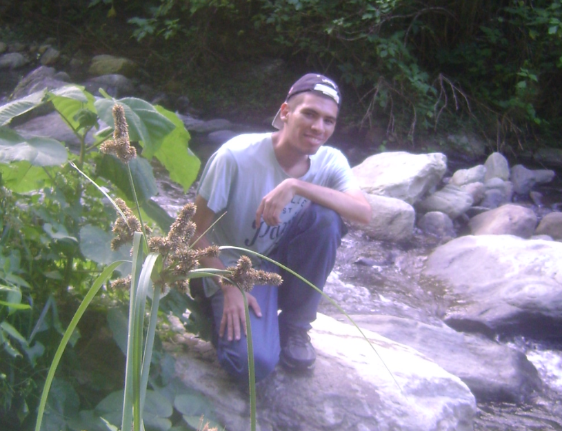

Luis Fernando González Vázquez
Estudiante de Licenciatura en Geoquímica, Diseñador y Desarrollador web
Estudiante de Licenciatura en Geoquímica, Diseñador y Desarrollador web
Estudiante de pregrado en la escuela de geoquímica de la Facultad de Ciencias, de la Universidad Central de Venezuela. Con sólidos conocimientos técnicos y científicos para formar parte como tesista y/o pasante en proyectos orientados a la exploración y prospección de recursos naturales tales como hidrocarburos, yacimientos minerales, hidrogeoquímica, geología y geomorfología. Y con competencias experimentales para muestreos geoquímicos en distintos tipos de muestras tales como aguas, suelos, sedimentos, crudos y rocas. Con su posterior tratamiento químico y geoestadístico de las mismas, para su correspondiente interpretación y búsqueda de anomalías geoquímicas para delimitar áreas de interés económico.
U.E.P Colegio San José
Bachiller en Educación media general
Universidad Central de Venezuela
Estudiante del noveno semestre de Geoquímica
| Organización: | Universidad Central de Venezuela. |
| Cargo: | Preparador(2017) |
| Materia: | Mineralogía Óptica |
| Funciones: | Asistir a los estudiantes en la identificación de minerales en secciones finas de muestras de rocas. A través de microscopios petrográficos. |
| Organización: | Universidad Central de Venezuela |
| Cargo: | Preparador(2019) |
| Materia: | Geología Estructural |
| Funciones: | Impartir clases teórico-prácticas en la interpretación de datos geoestructurales asociados a fallas y pliegues. |
| Organización: | Universidad Central de Venezuela |
| Cargo: | Preparador(2020) |
| Materia: | Geomorfología |
| Funciones: | Impartir clases teórico-prácticas en la interpretación de estructuras geomorfologicas, fallas, plegamientos y cuencas hidrograficas mediante el uso de fotografias aereas |